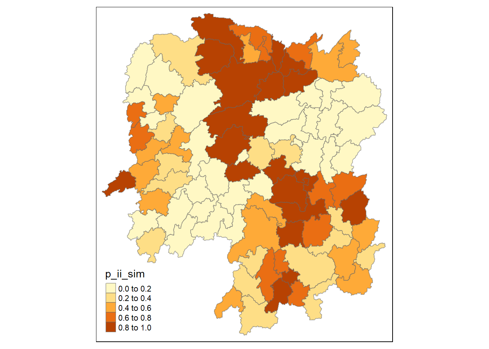
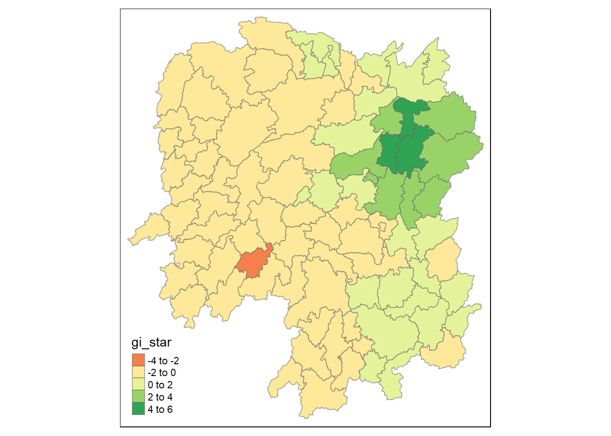
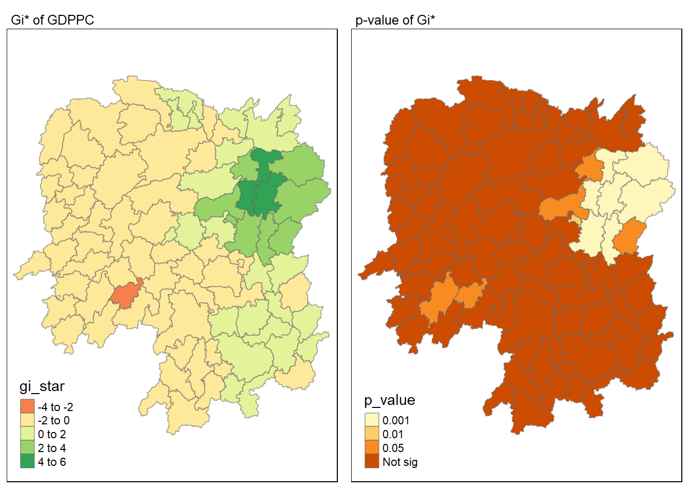
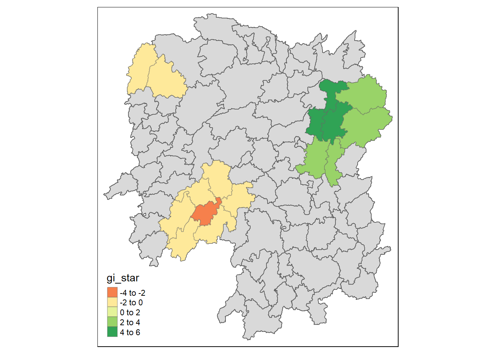
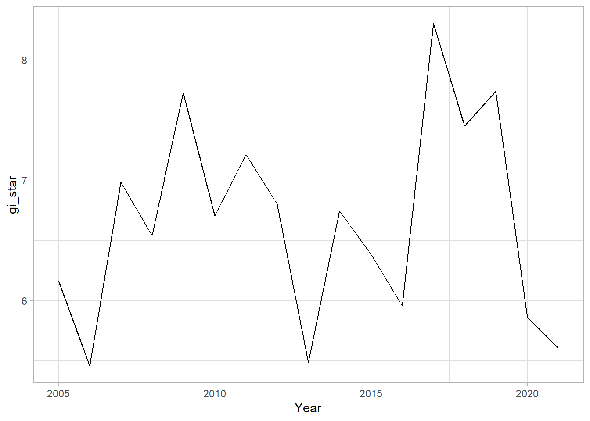
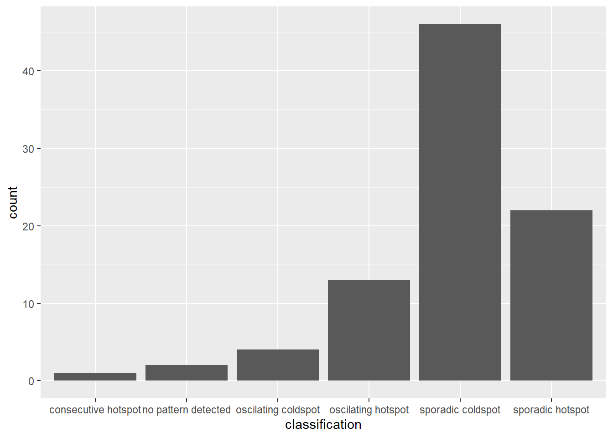

pacman::p_load(sf, sfdep, tmap, zoo, plotly, tidyverse)In Class Exercise 6: Global and Local Measures of Autocorrelation
Setup
Import Data
hunan <- st_read(dsn = "data/geospatial",
layer = "Hunan")Reading layer `Hunan' from data source
`C:\zoe-chia\IS415\In-class_Ex\In-class_Ex07\data\geospatial'
using driver `ESRI Shapefile'
Simple feature collection with 88 features and 7 fields
Geometry type: POLYGON
Dimension: XY
Bounding box: xmin: 108.7831 ymin: 24.6342 xmax: 114.2544 ymax: 30.12812
Geodetic CRS: WGS 84Attribute Data
hunan2012 <- read_csv("data/aspatial/Hunan_2012.csv")hunan_GDPPC <- left_join(hunan,hunan2012) %>%
select(1:4, 7, 9, 15)Step 1: Queen’s method
Prepare weight metrics
wm_q <- hunan_GDPPC %>%
mutate(nb = st_contiguity(geometry),
wt = st_weights(nb,
style = "W"),
.before = 1)Compute Global Moran’s I
moranI <- global_moran(wm_q$GDPPC,
wm_q$nb,
wm_q$wt)Perform Global Moran’s I Test
Gives you test statistics, p value for you to find
global_moran_test(wm_q$GDPPC,
wm_q$nb,
wm_q$wt)
Moran I test under randomisation
data: x
weights: listw
Moran I statistic standard deviate = 4.7351, p-value = 1.095e-06
alternative hypothesis: greater
sample estimates:
Moran I statistic Expectation Variance
0.300749970 -0.011494253 0.004348351 0.000001095 is smaller than the alpha value of 0.05 hence we reject the H0 that the observed gdppc is spatially independent.
Moran I Statistic value is greater than 0, hence there are signed of clustering.
Perform Global Moran’s I Permutation Test
Monte Carlo Simulation
Ensure that your model is reproducible by setting a seed:
set.seed(1234)global_moran_perm(wm_q$GDPPC,
wm_q$nb,
wm_q$wt,
nsim = 99)
Monte-Carlo simulation of Moran I
data: x
weights: listw
number of simulations + 1: 100
statistic = 0.30075, observed rank = 100, p-value < 2.2e-16
alternative hypothesis: two.sided0.30075 is the Moran’s statistic Significance level (p value) has changed
Computing Local Moran’s I
lisa <- wm_q %>%
mutate(local_moran = local_moran(
GDPPC, nb, wt, nsim = 99),
.before = 1) %>% # push everything in front
unnest(local_moran) # so that we can map later
lisaSimple feature collection with 88 features and 21 fields
Geometry type: POLYGON
Dimension: XY
Bounding box: xmin: 108.7831 ymin: 24.6342 xmax: 114.2544 ymax: 30.12812
Geodetic CRS: WGS 84
# A tibble: 88 × 22
ii eii var_ii z_ii p_ii p_ii_…¹ p_fol…² skewn…³ kurtosis
<dbl> <dbl> <dbl> <dbl> <dbl> <dbl> <dbl> <dbl> <dbl>
1 -0.00147 0.00177 4.18e-4 -0.158 0.874 0.82 0.41 -0.812 0.652
2 0.0259 0.00641 1.05e-2 0.190 0.849 0.96 0.48 -1.09 1.89
3 -0.0120 -0.0374 1.02e-1 0.0796 0.937 0.76 0.38 0.824 0.0461
4 0.00102 -0.0000349 4.37e-6 0.506 0.613 0.64 0.32 1.04 1.61
5 0.0148 -0.00340 1.65e-3 0.449 0.654 0.5 0.25 1.64 3.96
6 -0.0388 -0.00339 5.45e-3 -0.480 0.631 0.82 0.41 0.614 -0.264
7 3.37 -0.198 1.41e+0 3.00 0.00266 0.08 0.04 1.46 2.74
8 1.56 -0.265 8.04e-1 2.04 0.0417 0.08 0.04 0.459 -0.519
9 4.42 0.0450 1.79e+0 3.27 0.00108 0.02 0.01 0.746 -0.00582
10 -0.399 -0.0505 8.59e-2 -1.19 0.234 0.28 0.14 -0.685 0.134
# … with 78 more rows, 13 more variables: mean <fct>, median <fct>,
# pysal <fct>, nb <nb>, wt <list>, NAME_2 <chr>, ID_3 <int>, NAME_3 <chr>,
# ENGTYPE_3 <chr>, County <chr>, avg_wage <dbl>, GDPPC <dbl>,
# geometry <POLYGON [°]>, and abbreviated variable names ¹p_ii_sim,
# ²p_folded_sim, ³skewnessii: local moran i statistics
eii: expectations, std dev
var: var of moran i
z: standardised moran i
p_ii: p-value of i
p_ii_sim: p-value after simulation
p folded: k fold method for simulation
mean and pysal (python library) should be the same, you can use either mean or pysal.
Visualising Local Moran’s I
Visualise ii
tmap_mode('plot')
tm_shape(lisa) +
tm_fill("ii") +
tm_borders(alpha = 0.5) +
tm_view(set.zoom.limits = c(6,8))
Visualise p_ii_sim
tmap_mode('plot')
tm_shape(lisa) +
tm_fill("p_ii_sim") + # p-value of local moran i
tm_borders(alpha = 0.5)
Note
Should ideally use the one from the simulation (e.g. p_ii_sim r p_folded_sim) to get a more stable result.
Plotting the two together:
tmap_mode("plot")
map1 <- tm_shape(lisa) +
tm_fill("ii") +
tm_borders(alpha = 0.5) +
tm_view(set.zoom.limits = c(6,8)) +
tm_layout(main.title = "local Moran's I of GDPPC",
main.title.size = 0.8)
map2 <- tm_shape(lisa) +
tm_fill("p_ii",
breaks = c(0, 0.001, 0.01, 0.05, 1),
labels = c("0.001", "0.01", "0.05", "Not sig")) +
tm_borders(alpha = 0.5) +
tm_layout(main.title = "p-value of local Moran's I",
main.title.size = 0.8)
tmap_arrange(map1, map2, ncol = 2)
Visualising LISA Map
lisa_sig <- lisa %>%
filter(p_ii < 0.05) # take out those that are < 0.05
tmap_mode('plot')
tm_shape(lisa)+
tm_polygons() +
tm_borders(alpha = 0.5) +
tm_shape(lisa_sig)+
tm_fill("mean") +
tm_borders(alpha = 0.4)
low-high and high-low are outliers because they are surrounded by polygons that are not like themselves.
Not tidy ^ figure out from hands on ex. Should also have a portion called insignificant.
Hot Spot and Cold Spot Area Analysis
HCSA uses spatial weights to identify locations of statistically significant hot spots and cold spots in an spatially weighted attribute that are in proximity to one another based on a calculated distance. The analysis groups features when similar high (hot) or low (cold) values are found in a cluster. The polygon features usually represent administration boundaries or a custom grid structure.
Compute local Gi* Statistics
wm_idw <- hunan_GDPPC %>%
mutate(nb = st_contiguity(geometry),
wts = st_inverse_distance(nb, geometry,
scale = 1,
alpha = 1),
.before = 1)HCSA <- wm_idw %>%
mutate(local_Gi = local_gstar_perm(
GDPPC, nb, wt, nsim = 99),
.before = 1) %>%
unnest(local_Gi)
HCSASimple feature collection with 88 features and 17 fields
Geometry type: POLYGON
Dimension: XY
Bounding box: xmin: 108.7831 ymin: 24.6342 xmax: 114.2544 ymax: 30.12812
Geodetic CRS: WGS 84
# A tibble: 88 × 18
gi_star e_gi var_gi p_value p_sim p_fol…¹ skewn…² kurto…³ nb wts
<dbl> <dbl> <dbl> <dbl> <dbl> <dbl> <dbl> <dbl> <nb> <lis>
1 -0.00567 0.0115 0.00000812 9.95e-1 0.82 0.41 1.03 1.23 <int> <dbl>
2 -0.235 0.0110 0.00000581 8.14e-1 1 0.5 0.912 1.05 <int> <dbl>
3 0.298 0.0114 0.00000776 7.65e-1 0.7 0.35 0.455 -0.732 <int> <dbl>
4 0.145 0.0121 0.0000111 8.84e-1 0.64 0.32 0.900 0.726 <int> <dbl>
5 0.356 0.0113 0.0000119 7.21e-1 0.64 0.32 1.08 1.31 <int> <dbl>
6 -0.480 0.0116 0.00000706 6.31e-1 0.82 0.41 0.364 -0.676 <int> <dbl>
7 3.66 0.0116 0.00000825 2.47e-4 0.02 0.01 0.909 0.664 <int> <dbl>
8 2.14 0.0116 0.00000714 3.26e-2 0.16 0.08 1.13 1.48 <int> <dbl>
9 4.55 0.0113 0.00000656 5.28e-6 0.02 0.01 1.36 4.14 <int> <dbl>
10 1.61 0.0109 0.00000341 1.08e-1 0.18 0.09 0.269 -0.396 <int> <dbl>
# … with 78 more rows, 8 more variables: NAME_2 <chr>, ID_3 <int>,
# NAME_3 <chr>, ENGTYPE_3 <chr>, County <chr>, avg_wage <dbl>, GDPPC <dbl>,
# geometry <POLYGON [°]>, and abbreviated variable names ¹p_folded_sim,
# ²skewness, ³kurtosisVisualising Gi*
tmap_mode("plot")
tm_shape(HCSA) +
tm_fill("gi_star") +
tm_borders(alpha = 0.5) +
tm_view(set.zoom.limits = c(6,8))
Visualing p-value of HCSA
tmap_mode("plot")
tm_shape(HCSA) +
tm_fill("p_sim") +
tm_borders(alpha = 0.5)
Visualising local HCSA
tmap_mode("plot")
map1 <- tm_shape(HCSA) +
tm_fill("gi_star") +
tm_borders(alpha = 0.5) +
tm_view(set.zoom.limits = c(6,8)) +
tm_layout(main.title = "Gi* of GDPPC",
main.title.size = 0.8)
map2 <- tm_shape(HCSA) +
tm_fill("p_value",
breaks = c(0, 0.001, 0.01, 0.05, 1),
labels = c("0.001", "0.01", "0.05", "Not sig")) +
tm_borders(alpha = 0.5) +
tm_layout(main.title = "p-value of Gi*",
main.title.size = 0.8)
tmap_arrange(map1, map2, ncol = 2)
Visualising hot and cold spot areas
HCSA_sig <- HCSA %>%
filter(p_sim < 0.05)
tmap_mode("plot")
tm_shape(HCSA) +
tm_polygons() +
tm_borders(alpha = 0.5) +
tm_shape(HCSA_sig) +
tm_fill("gi_star") +
tm_borders(alpha = 0.4)
Note
Figure above reveals that there is one hot spot area and two cold spot areas. Interestingly, the hot spot areas coincide with the High-high cluster identifies by using local Moran’s I method in the earlier sub-section.
Local G: where ii = 0, exclude yourself
Local G*: Include yourself, hn99
Emerging Hot Spot Analysis
Spatio-temporal analysis method forrevealing and describing how hot spot and cold spot areas evolve over time.
Year, location name, value Consolidate
hunan <- st_read(dsn = "data/geospatial",
layer = "Hunan")Reading layer `Hunan' from data source
`C:\zoe-chia\IS415\In-class_Ex\In-class_Ex07\data\geospatial'
using driver `ESRI Shapefile'
Simple feature collection with 88 features and 7 fields
Geometry type: POLYGON
Dimension: XY
Bounding box: xmin: 108.7831 ymin: 24.6342 xmax: 114.2544 ymax: 30.12812
Geodetic CRS: WGS 84GDPPC <- read_csv("data/aspatial/Hunan_GDPPC.csv")1. Build a space-time cube
spacetime() of sfdep is used to create a spatio-temporal cube.
GDPPC_st <- spacetime(GDPPC,
hunan,
.loc_col = "County",
.time_col = "Year")Check if GDPPC_st is a space-time cube
is_spacetime_cube(GDPPC_st)[1] TRUE2. Calculate Getis-Ord local Gi* statistic for each bin by using an FDR correction
Computing Gi*
(i) Derive Spatial Weights
Use these new columns to calculate the local Gi* for each location.
- Identify neighbours and derive an inverse distance weights
GDPPC_nb <-GDPPC_st %>%
activate("geometry") %>%
mutate(
nb = include_self(st_contiguity(geometry)),
wt= st_weights(nb)
) %>%
set_nbs("nb") %>%
set_wts("wt")The dataset now has neighbours and weights for each time slice.
(ii) Computing Gi*
- Calculate local Gi* for each location by grouping by Year
gi_stars <- GDPPC_nb %>%
group_by(Year) %>%
mutate(gi_star = local_gstar_perm(
GDPPC, nb, wt, nsim = 99)) %>%
tidyr::unnest(gi_star)3. Evaluate hot and cold areas with Mann-Kendall Test
From the Gi* values above, evaluate each location for a trend using the Mann-Kendall test.
cbg <- gi_stars %>%
ungroup() %>%
filter(County == "Changsha") |>
select(County, Year, gi_star)ggplot(data = cbg,
aes(x = Year,
y = gi_star)) +
geom_line() +
theme_light()
Interactive plot:
p <- ggplot(data = cbg,
aes(x = Year,
y = gi_star)) +
geom_line() +
theme_light()
ggplotly(p) # ggplotly(p) - create interactive#emerging <- ehsa %>%
# arrange(s1,abs(tau)) %>%
# slice(1:5)cbg %>%
summarise(mk = list(
unclass(
Kendall::MannKendall(gi_star)))) %>%
tidyr::unnest_wider(mk)# A tibble: 1 × 5
tau sl S D varS
<dbl> <dbl> <dbl> <dbl> <dbl>
1 0.0441 0.837 6 136. 589.
Note
sl: p-value
Slightly upward and insignificant trend.
To replicate for each location, use group_by() of the dplyr package:
ehsa <- gi_stars %>%
group_by(County) %>%
summarise(mk = list(
unclass(
Kendall::MannKendall(gi_star)))) %>%
tidyr::unnest_wider(mk)Arrange to show significant emerging hot-cold spots.
emerging <- ehsa %>%
arrange(sl, abs(tau)) %>%
slice(1:5)Performing Emerging Hotspot Analysis
ehsa <- emerging_hotspot_analysis(
x = GDPPC_st,
.var = "GDPPC",
k = 1,
nsim = 99
)Visualing distribution of EHSA Classes
ggplot(data = ehsa,
aes(x = classification)) +
geom_bar()
Figure above shows that sporadic cold spots class has the high numbers of county.
Visualing EHSA
#hunan_ehsa <- hunan %>%
# left_join(ehsa,
# by = join_by(County == location))#ehsa_sig <- hunan_ehsa %>%
# filter(p_value < 0.05)
#tmap_mode("plot")
#tm_shape(hunan_ehsa) +
# tm_polygons() +
# tm_borders(alpha = 0.5) +
#tm_shape(ehsa_sig) +
# tm_fill("classification") +
# tm_borders(alpha = 0.4)# ehsa_sig <- lisa %>%
# filter(p_li < 0.05)
#tmap_mode('plot')
#tm_shape(lisa) +
# tm_polygons() +
# tm_borders(alpha = 0.5) +
# tm_shape(lisa_sig) +
# tm_fill("mean") +
# tm_borders(alpha = 0.4)